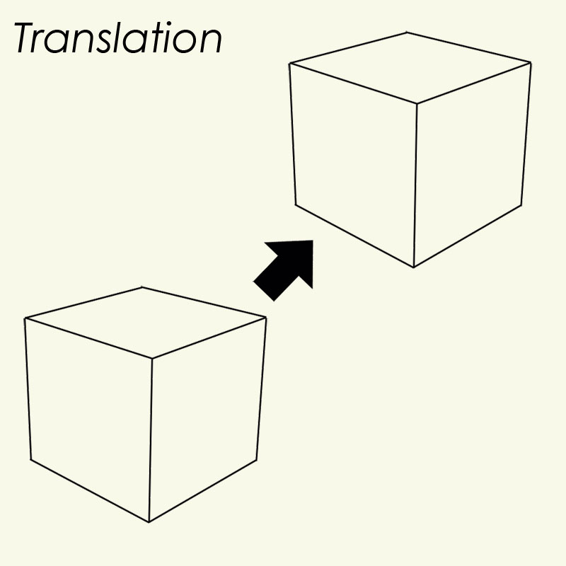
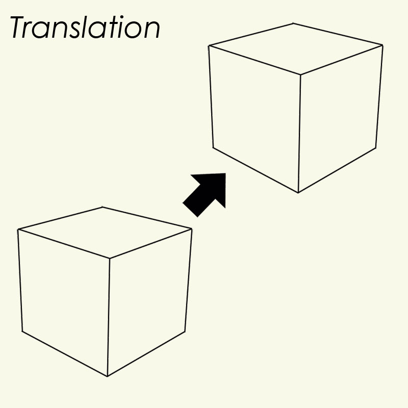
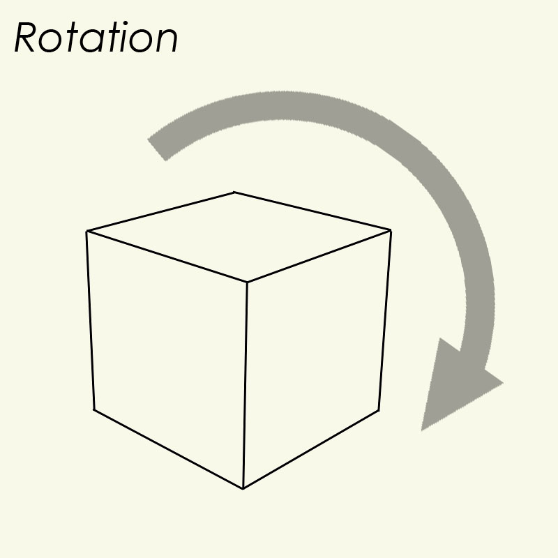
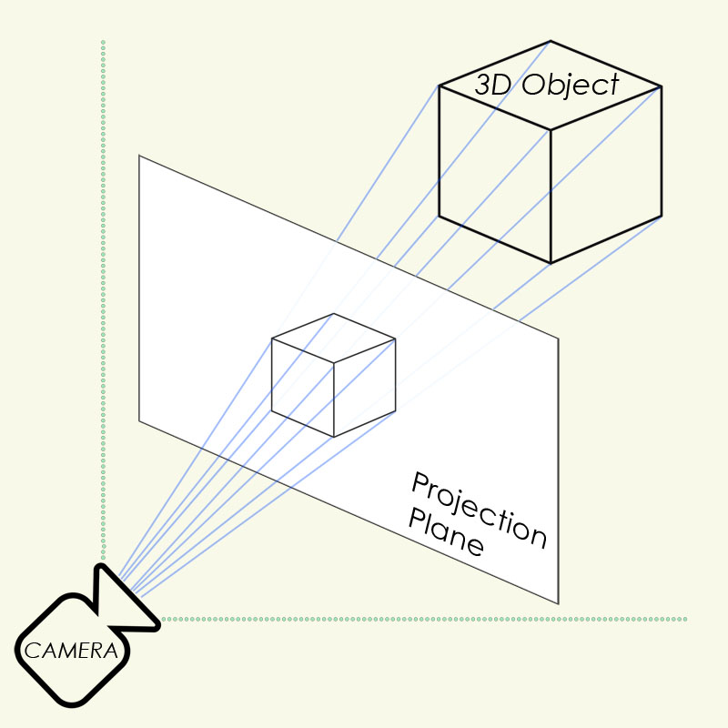
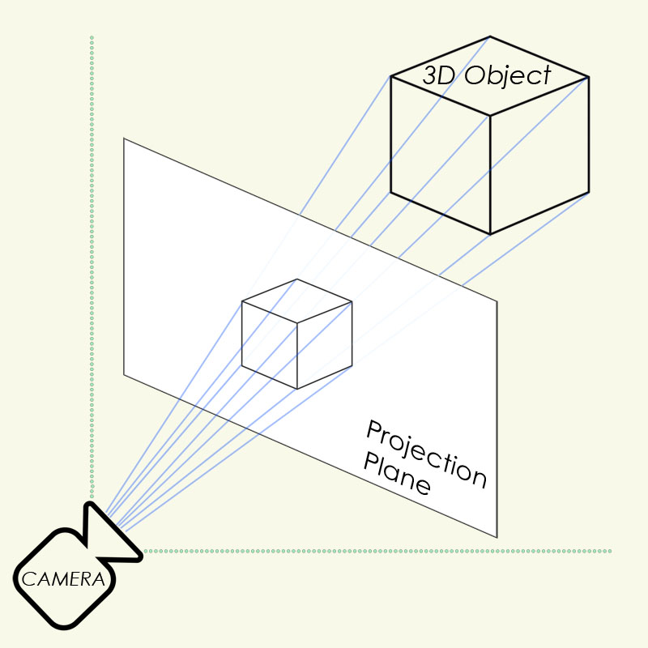

3D engines come in many shapes and sizes and are used to render graphics in video games, CAD programs, medical imaging software, and countless other applicatoins. Some 3D engines involve OpenGL or DirectX and are highly complex, harnessing the power of the GPU and shaders to control colors, lighting, textures, shadows, reflections, and more.
But a 3D engine does not need to be complex. Here we will explore a very simple 3D engine and see it in action.
Making a Basic 3D Engine
Every 3D engine must perform at least 3 functions:
Translation (moving an object)
Rotation
and Projection
First, let's look at translation, the simplest of the three.
 Translation simply moves an object a specific distance in some direction. In this demonstration, we will be using shapes that have a "master" position, and then sub-positions for each vertex which are relative to the master position. To translate an object's position we could move every vertex, but it's much simpler to move the master position, then all the vertices follow.
First, let's look at translation, the simplest of the three.
 Translation simply moves an object a specific distance in some direction. In this demonstration, we will be using shapes that have a "master" position, and then sub-positions for each vertex which are relative to the master position. To translate an object's position we could move every vertex, but it's much simpler to move the master position, then all the vertices follow.
function translateShape(x, y, z, shape){
shape.x += x;
shape.y += y;
shape.z += z;
}

Next, let's look at rotation. There are several ways to rotate a vertex. A naïve approach might be to use trig, like so:
...which works, but involves several expensive calls to atan2 and sqrt. There is a better way. Enter matrices! Let us look at a function that does the same thing without calls to atan2 and sqrt.
Next, let's look at rotation. There are several ways to rotate a vertex. A naïve approach might be to use trig, like so:
function trig_rotate(vert, roll, pitch, yaw){
var d, p, x=vert.x, y=vert.y, z=vert.z;
var {cos, sin, sqrt, atan2} = Math;
d = sqrt(x*x+y*y);
p = atan2(x,y);
x = sin(p-roll)*d;
y = cos(p-roll)*d;
d = sqrt(y*y+z*z);
p = atan2(y,z);
y = sin(p+pitch)*d;
z = cos(p+pitch)*d;
d = sqrt(x*x+z*z);
p = atan2(x,z);
x = sin(p+yaw)*d;
z = cos(p+yaw)*d;
return {x:x, y:y, z:z};
}
...which works, but involves several expensive calls to atan2 and sqrt. There is a better way. Enter matrices! Let us look at a function that does the same thing without calls to atan2 and sqrt.
function matrix_rotate(vert, roll, pitch, yaw) {
var {cos, sin} = Math;
var cosa = cos(roll);
var sina = sin(roll);
var cosb = cos(yaw);
var sinb = sin(yaw);
var cosc = cos(-pitch);
var sinc = sin(-pitch);
var xx = cosa*cosb;
var xy = cosa*sinb*sinc - sina*cosc;
var xz = cosa*sinb*cosc + sina*sinc;
var yx = sina*cosb;
var yy = sina*sinb*sinc + cosa*cosc;
var yz = sina*sinb*cosc - cosa*sinc;
var zx = -sinb;
var zy = cosb*sinc;
var zz = cosb*cosc;
var px = xx*vert.x + xy*vert.y + xz*vert.z;
var py = yx*vert.x + yy*vert.y + yz*vert.z;
var pz = zx*vert.x + zy*vert.y + zz*vert.z;
return {x:px, y:py, z:pz};
}
In a benchmark test, the matrix function beats the trig function hands down, averaging about 300% faster.
Finally, let us look at 3D projection.
The task is to project, or "rasterize" 3 dimensional coordinates onto a 2 dimensional plane, which can then be displayed on a screen. One way this can be done is by tracing straight lines from the camera to the 3D object, and finding the points of intersection with a plane in front of the camera.

Let's look at a function that projects a single 3D vertex onto a 2D screen, with respect to the camera's position and rotation.
The task is to project, or "rasterize" 3 dimensional coordinates onto a 2 dimensional plane, which can then be displayed on a screen. One way this can be done is by tracing straight lines from the camera to the 3D object, and finding the points of intersection with a plane in front of the camera.

Let's look at a function that projects a single 3D vertex onto a 2D screen, with respect to the camera's position and rotation.
function project3D(x, y, z, vars){
var p,d
var {cos, sin, sqrt, atan2} = Math;
// apply camera position
x -= vars.camX;
y -= vars.camY;
z -= vars.camZ;
// apply camera rotation
p = atan2(x,z);
d = sqrt(x*x+z*z);
x = sin(p-vars.yaw)*d;
z = cos(p-vars.yaw)*d;
p = atan2(y,z);
d = sqrt(y*y+z*z);
y = sin(p-vars.pitch)*d;
z = cos(p-vars.pitch)*d;
// create invisible horizontal line in front of camera
var x1 = -100,y1=1,x2=100,y2=1;
// create invisible line from camera to to vertex
var x3 = 0,y3 = 0,x4 = x,y4 = z;
// find intersection between the two lines, if any
var uc = (y4-y3)*(x2-x1)-(x4-x3)*(y2-y1);
var ua = ((x4-x3)*(y1-y3)-(y4-y3)*(x1-x3))/uc;
var ub = ((x2-x1)*(y1-y3)-(y2-y1)*(x1-x3))/uc;
// if intersection occurs within both line segments...
// return the 2D projected coordinates,
// or else the vertex is outside of the field of vision
if(ua>0&&ua<1&&ub>0&&ub<1){
return {
x:vars.cx+(x1+ua*(x2-x1))*vars.scale,
y:vars.cy+y/z*vars.scale,
d:sqrt(x*x+y*y+z*z)
};
}else{
return {d:-1};
}
}
You may notice that the function accepts 4 parameters:
x, y, z, and vars. The vars parameter will be an object with at least 6 members: camX, camY, camZ, cx, cy, and scale. cx & cy are just the center of the screen. The value of scale determines how much "perspective" is seen in the output. a large scale will result in more isomorphic rendering, whereas a small scale will cause objects in the distance to shrink rapidly.
The function returns one of two possible objects, depending on whether the vertex is in front of the camera or not. If in front, the function returns the projected positions x and y on a 2D plane in front of the camera, as well as d, the distance to the vertex, which is useful for say, adjusting line weights, as will be shown. If the vertex is behind the camera, the function simply returns d = -1. So to render a scene, we need only check that d != -1 for each vertex, then connect them.
x, y, z, and vars. The vars parameter will be an object with at least 6 members: camX, camY, camZ, cx, cy, and scale. cx & cy are just the center of the screen. The value of scale determines how much "perspective" is seen in the output. a large scale will result in more isomorphic rendering, whereas a small scale will cause objects in the distance to shrink rapidly.
The function returns one of two possible objects, depending on whether the vertex is in front of the camera or not. If in front, the function returns the projected positions x and y on a 2D plane in front of the camera, as well as d, the distance to the vertex, which is useful for say, adjusting line weights, as will be shown. If the vertex is behind the camera, the function simply returns d = -1. So to render a scene, we need only check that d != -1 for each vertex, then connect them.
The following program uses translation, rotation, and projection to display an animated cube. The full code is shown below.
function translateShape(x, y, z, shape){
shape.x += x;
shape.y += y;
shape.z += z;
}
function matrix_rotate(vert, roll, pitch, yaw) {
var {cos, sin} = Math;
var cosa = cos(roll);
var sina = sin(roll);
var cosb = cos(yaw);
var sinb = sin(yaw);
var cosc = cos(-pitch);
var sinc = sin(-pitch);
var xx = cosa*cosb;
var xy = cosa*sinb*sinc - sina*cosc;
var xz = cosa*sinb*cosc + sina*sinc;
var yx = sina*cosb;
var yy = sina*sinb*sinc + cosa*cosc;
var yz = sina*sinb*cosc - cosa*sinc;
var zx = -sinb;
var zy = cosb*sinc;
var zz = cosb*cosc;
var px = xx*vert.x + xy*vert.y + xz*vert.z;
var py = yx*vert.x + yy*vert.y + yz*vert.z;
var pz = zx*vert.x + zy*vert.y + zz*vert.z;
return {x:px, y:py, z:pz};
}
function project3D(x, y, z, vars){
var p,d
var {cos, sin, sqrt, atan2} = Math;
x -= vars.camX;
y -= vars.camY;
z -= vars.camZ;
p = atan2(x,z);
d = sqrt(x*x+z*z);
x = sin(p-vars.yaw)*d;
z = cos(p-vars.yaw)*d;
p = atan2(y,z);
d = sqrt(y*y+z*z);
y = sin(p-vars.pitch)*d;
z = cos(p-vars.pitch)*d;
var x1 = -100,y1 = 1,x2 = 100,y2 = 1,x3 = 0,y3 = 0,x4 = x,y4 = z;
var uc = (y4-y3)*(x2-x1)-(x4-x3)*(y2-y1);
if(!uc) return {x:0,y:0,d:-1};
var ua=((x4-x3)*(y1-y3)-(y4-y3)*(x1-x3))/uc;
var ub=((x2-x1)*(y1-y3)-(y2-y1)*(x1-x3))/uc;
if(ua>0&&ua<1&&ub>0&&ub<1){
return {
x:vars.cx+(x1+ua*(x2-x1))*vars.scale,
y:vars.cy+y/z*vars.scale,
d:sqrt(x*x+y*y+z*z)
};
}else{
return {d:-1};
}
}
function frame(vars){
if(vars === undefined){
var vars={};
vars.canvas = document.querySelector("#canvas");
vars.ctx = vars.canvas.getContext("2d");
vars.canvas.width = 758;
vars.canvas.height = 500;
vars.frameNo=0;
vars.camX = 1;
vars.camY = 0;
vars.camZ = -6;
vars.pitch = 0;
vars.yaw = 0;
vars.roll = 0;
vars.cx=vars.canvas.width/2;
vars.cy=vars.canvas.height/2;
vars.scale=500;
vars.shape=loadCube(-1,0,1);
}
vars.frameNo++;
requestAnimationFrame(function() {
frame(vars);
});
vars.ctx.clearRect(0, 0, canvas.width, canvas.height);
var x,y,z,point1,point2;
vars.ctx.strokeStyle="#ff0";
x=Math.sin(vars.frameNo/40)/20;
y=0;
z=Math.cos(vars.frameNo/40)/20;
translateShape(x,y,z,vars.shape);
for(var i=0;i<vars.shape.segs.length;++i){
vars.shape.segs[i].a=matrix_rotate(vars.shape.segs[i].a,0,-0.025,0.02);
vars.shape.segs[i].b=matrix_rotate(vars.shape.segs[i].b,0,-0.025,0.02);
x=vars.shape.x+vars.shape.segs[i].a.x;
y=vars.shape.y+vars.shape.segs[i].a.y;
z=vars.shape.z+vars.shape.segs[i].a.z;
point1=project3D(x,y,z,vars);
if(point1.d != -1){
x=vars.shape.x+vars.shape.segs[i].b.x;
y=vars.shape.y+vars.shape.segs[i].b.y;
z=vars.shape.z+vars.shape.segs[i].b.z;
point2=project3D(x,y,z,vars);
if(point2.d != -1){
vars.ctx.lineWidth=50/(1+point1.d);
vars.ctx.beginPath();
vars.ctx.moveTo(point1.x,point1.y);
vars.ctx.lineTo(point2.x,point2.y);
vars.ctx.stroke();
}
}
}
}
function Vert(x,y,z){
this.x = x;
this.y = y;
this.z = z;
}
function Seg(x1,y1,z1,x2,y2,z2){
this.a = new Vert(x1,y1,z1);
this.b = new Vert(x2,y2,z2);
}
function loadCube(x,y,z){
var shape={};
shape.x=x;
shape.y=y;
shape.z=z;
shape.segs=[];
shape.segs.push(new Seg(-1,-1,-1,1,-1,-1));
shape.segs.push(new Seg(1,-1,-1,1,1,-1));
shape.segs.push(new Seg(1,1,-1,-1,1,-1));
shape.segs.push(new Seg(-1,1,-1,-1,-1,-1));
shape.segs.push(new Seg(-1,-1,1,1,-1,1));
shape.segs.push(new Seg(1,-1,1,1,1,1));
shape.segs.push(new Seg(1,1,1,-1,1,1));
shape.segs.push(new Seg(-1,1,1,-1,-1,1));
shape.segs.push(new Seg(-1,-1,-1,-1,-1,1));
shape.segs.push(new Seg(1,-1,-1,1,-1,1));
shape.segs.push(new Seg(1,1,-1,1,1,1));
shape.segs.push(new Seg(-1,1,-1,-1,1,1));
return shape;
}
frame();
All the preceding code, graphics, and instruction was written by Scott McGann. Questions or comments can be emailed to s.r.mcgann[at]hotmail.com. Happy coding!